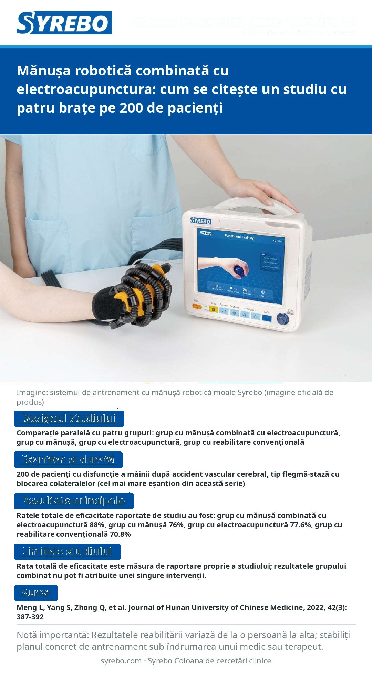

Numărul 06 · Versiune poster
Mănușa robotică combinată cu electroacupunctura: cum se citește un studiu cu patru brațe pe 200 de pacienți

Sursa: Meng L, Yang S, Zhong Q, et al. Clinical study of rehabilitation robot gloves combined with electroacupuncture to treat patients with phlegm-stasis blocking collaterals stroke hand dysfunction. Journal of Hunan University of Chinese Medicine, 2022, 42(3): 387-392.
Pagina sursăLimitele studiului: Rata totală de eficacitate este măsura de raportare proprie a studiului; rezultatele grupului combinat nu pot fi atribuite unei singure intervenții.
Notă: rezultatele reabilitării variază de la o persoană la alta; urmați planul de antrenament prescris de medic sau de terapeut.
Citește textul integral în chinezăRead in English